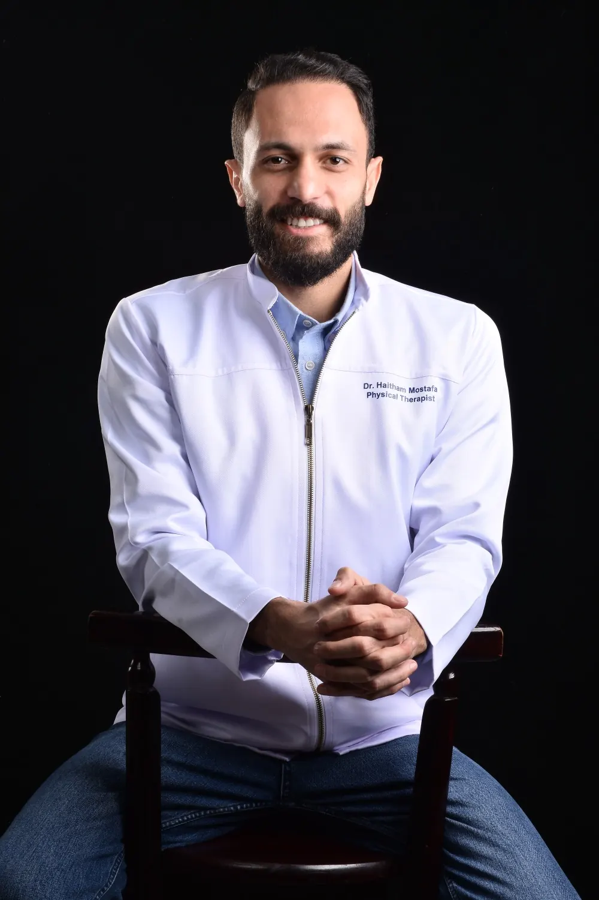
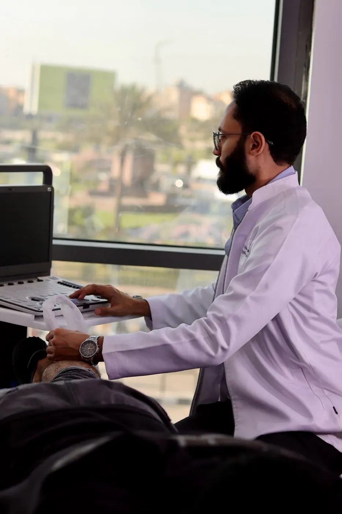

تأهيل إصابات الملاعب
تمزق العضلات، إصابات الأربطة والغضاريف، التواء الكاحل، وبرامج رجوع آمن ومرحلي للملعب.
نرجّعك للملعب ولحركتك الطبيعية بأمان — بتشخيص دقيق بالسونار، وبرنامج تأهيل مصمم لإصابتك أنت، في مركز Fizio Medix بمدينة ٦ أكتوبر.
4.9· ٢٧ تقييم على جوجل
تأهيل متخصص للرياضيين ورجوع آمن للملعب.
تشخيص دقيق للعضلات والأوتار والأربطة.
كلية العلاج الطبيعي — جامعة القاهرة.
سنين من العمل مع الإصابات والرياضيين.
د. هيثم مصطفى يوسف أخصائي علاج طبيعي متخصص في تأهيل إصابات الملاعب والتشخيص بالسونار العضلي الحركي، وشغّال في المجال من سنة ٢٠١٦. حاصل على ماجستير العلاج الطبيعي من جامعة القاهرة، وحاليًا باحث دكتوراه في نفس الجامعة. كمان حاصل على دبلومة FIFA في إصابات الملاعب، وممارس لتقنيات موليجان (Mulligan) وميتلاند (Maitland) في العلاج اليدوي.
بيؤمن إن العلاج الصح بيبدأ بتشخيص دقيق؛ عشان كده بيستخدم السونار العضلي الحركي لتحديد مكان ودرجة الإصابة، وبعدها بيبني برنامج تأهيل مرحلي واضح لحد ما ترجع لنشاطك أو لملعبك بأمان.
بنعالج إيه؟ تخصص أساسي في إصابات الملاعب والتشخيص بالسونار، مع برامج علاج طبيعي وتأهيل لمشاكل العضلات والعظام والمفاصل في ٦ أكتوبر.
تمزق العضلات، إصابات الأربطة والغضاريف، التواء الكاحل، وبرامج رجوع آمن ومرحلي للملعب.
فحص العضلات والأوتار والأربطة بالموجات الصوتية لتحديد مكان ودرجة الإصابة ومتابعة التئامها.
تأهيل بعد عمليات الرباط الصليبي، تغيير المفاصل، الكسور، ومناظير الكتف والركبة.
الانزلاق الغضروفي، عرق النسا، خشونة الفقرات، وتشنجات العضلات المرتبطة بالجلوس الطويل.
خشونة الركبة، تيبّس وآلام الكتف، والتهاب الأوتار — لتقليل الألم وتحسين الحركة.
تقنيات العلاج اليدوي ومنها مفهوما موليجان (Mulligan) وميتلاند (Maitland)، مع برنامج تمارين علاجية لتقوية العضلات ومنع رجوع الألم.
تقنية يدوية خفيفة ومتخصصة لتقليل التورّم والاحتقان بعد العمليات والإصابات، وتحسين حركة السوائل الليمفاوية.
جلسات للرياضيين بعد التمرين والمباريات لتخفيف الإجهاد العضلي وتسريع الاستشفاء، بتجمع بين العلاج اليدوي والإطالات.
حجامة تشريطية وجافة على يد متخصص، كجزء مكمّل لخطة العلاج لما تكون مناسبة لحالتك.
خطوات واضحة، وكل خطوة بتتبني على اللي قبلها.
نسمع منك، ونراجع التاريخ المرضي والأشعة، ونعمل فحص إكلينيكي كامل.
نحدد سبب المشكلة بدقة — وبالسونار لو الحالة محتاجة.
جلسات مصممة لحالتك بأهداف واضحة وعدد جلسات متوقع.
نقيس التحسن، ونديك برنامج تمارين يحميك من رجوع الإصابة.

صالة تأهيل رياضي، وغرف علاج خاصة، وأدوات تمارين علاجية — في مركز Fizio Medix بمدينة ٦ أكتوبر.
جمعنالك أكتر الأسئلة اللي بتوصلنا عن الحجز، والتشخيص بالسونار، ورحلة العلاج.
الفرق الأساسي إن العلاج عندنا بيعتمد على العلاج اليدوي بشكل أكبر، مش مجرد أجهزة علاجية. الجلسة مش إنك تتوصّل على جهاز وتستنى؛ الأخصائي بيشتغل معاك بإيده بتقنيات زي موليجان وميتلاند، مع تمارين علاجية مصممة لإصابتك، والأجهزة بتُستخدم كعامل مساعد بس لما يكون ليها لازمة فعلًا. وكمان التشخيص بالسونار العضلي في نفس الزيارة بيخلّينا نعالج السبب الحقيقي ونتابع التحسّن بشكل واضح.
لأ، تقدر تحجز على طول. لو متابع مع دكتور عظام أو عملت عملية، هات معاك تقريره وأي أشعة سابقة عشان نكمّل على نفس الخطة.
أي أشعة أو رنين أو سونار عملته قبل كده، تقرير العملية لو عملت عملية، وأسماء الأدوية اللي بتاخدها. والبس لبس رياضي مريح يسهّل فحص مكان الإصابة.
بنبدأ بتقييم كامل: نسمع منك قصة الإصابة، ونفحص الحركة والقوة ومكان الألم، ولو محتاج بنعمل سونار عضلي في نفس الزيارة. بتمشي وإنت فاهم تشخيصك وخطة العلاج وأول تمارين ليك.
أيوه، في المركز ٥ طبيبات علاج طبيعي. لو تفضّلي إن جلساتك تبقى مع طبيبة، اكتبي ده في طلب الحجز أو ابعتيلنا على واتساب، وهنرتّب ده معاكي.
السونار العضلي بيصوّر العضلات والأوتار والأربطة وهي بتتحرك، وبيتعمل في العيادة في نفس الزيارة، وبيسمح نقارن الجهة المصابة بالسليمة ونتابع الالتئام من جلسة للتانية. الرنين أدق في حاجات تانية زي الغضاريف جوه المفصل والعظم، ولو حالتك محتاجاه هنقولك.
لأ. السونار مفيهوش أي إشعاع ومش بيوجع، وينفع يتكرر أكتر من مرة بأمان — وده اللي بيخلّيه مناسب لمتابعة التئام الإصابة.
مش شرط. في حالات كتير الفحص الإكلينيكي مع السونار بيكفي للتشخيص. لو احتجنا أشعة أو رنين هنوضحلك ليه، وإيه اللي محتاجين نشوفه بالظبط.
الرجوع مش بعدد أيام، لكن بمعايير: الألم، ومدى الحركة، والقوة مقارنةً بالجهة السليمة، واختبارات حركية زي الجري والقفز وتغيير الاتجاه. بنرجّعك على مراحل عشان نقلل فرصة إن الإصابة ترجع.
بيتحدد بعد التقييم حسب نوع الإصابة ودرجتها وهدفك — حياة يومية من غير ألم ولا رجوع للمنافسة. بنقولك من الأول العدد المتوقع، وبنراجعه مع تحسّنك.
دي مدارس معروفة في العلاج اليدوي لتحسين حركة المفاصل وتقليل الألم. موليجان بيعتمد على تحريك المفصل وإنت بتعمل الحركة بنفسك، وميتلاند بيعتمد على تحريك المفصل بحركات متدرجة. المفروض تبقى مريحة، ولو حسيت بألم بنعدّل فورًا. ممكن تحس بشد بسيط بعدها بيروح خلال يوم أو اتنين.
أيوه، وده مفيد جدًا في عمليات زي الرباط الصليبي: التأهيل قبل العملية بيقلل التورم ويحسّن الحركة وقوة العضلة، وده بيسهّل التعافي بعدها. وبعد العملية بنمشي على البروتوكول بالتنسيق مع الجرّاح.
ابعتلنا بياناتك وهنتواصل معاك لتأكيد الميعاد.